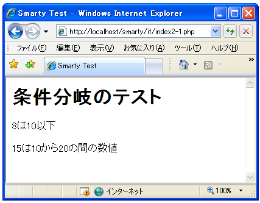

比較演算子と論理演算子
{if}関数の条件式では比較演算子や論理演算子を使って条件式を記述します。基本的にはPHPで使用できる演算子が利用できます。また下記に記述した演算子以外にも「+」「-」「*」「/」「%」などの代数演算子や括弧()などが使用可能です。
比較演算子
使用できる比較演算子は次の通りです。
| 演算子 | 説明 | 別名 |
|---|---|---|
| $LEFT == $RIGHT | $LEFTと$RIGHTが等しい時にtrue | eq |
| $LEFT != $RIGHT | $LEFTと$RIGHTが等しく無い時にtrue | ne, neq |
| $LEFT > $RIGHT | $LEFTが$RIGHTより大きい時にtrue | gt |
| $LEFT < $RIGHT | $LEFTが$RIGHTより小さい時にtrue | lt |
| $LEFT >= $RIGHT | $LEFTが$RIGHTより大きいか等しい時にtrue | gte, ge |
| $LEFT <= $RIGHT | $LEFTが$RIGHTより小さいか等しい時にtrue | lte, le |
| $LEFT === $RIGHT | $LEFTと$RIGHTが等しく、かつ同じデータ型の場合にtrue |
比較演算子では演算子の左辺と右辺を比較し、等しいかどうかや大きいかどうかなどを評価します。そして結果として真(true)か偽(false)の値を取ります。
例として変数「num」に格納された値が20よりも小さいかどうかを評価する条件式を記述すると次のようになります。
{if $num < 20}
20より小さい値です。
{/if}
比較演算子の「<」は左辺より右辺が小さい時に真(true)となります。よって変数「num」が20より小さい値だった場合だけ{if}と{/if}で囲われた処理を実行します。
比較演算子には別名が用意されているものがあります。例えば「==」の別名は「eq」となり、「==」の代わりに「eq」を使用することができます。
{if $num eq 20}
値は20です。
{/if}
論理演算子
使用できる論理演算子は次の通りです。
| 演算子 | 説明 | 別名 |
|---|---|---|
| $LEFT && $RIGHT | $LEFTと$RIGHTが共にTRUEの場合にTRUE | and |
| $LEFT || $RIGHT | $LEFTか$RIGHTのどちらかがTRUEの場合にTRUE | or |
| !$LEFT | $LEFTがTRUEで無い場合にTRUE | not |
論理演算子では複数の比較演算子の結果を組み合わせて評価する場合に使用されます。その為、論理演算子の$LEFTや$RIGHTには比較演算子の結果などが入ります。そして左辺と右辺の比較演算子の結果を組み合わせた結果として真(true)か偽(false)の値を取ります。
例として変数「num」に格納された値が10よりも大きく且つ20よりも小さいかどうかを評価する条件式を記述すると次のようになります。
{if $num > 10 && $num < 20}
10よりも大きく20より小さい値です。
{/if}
論理演算子にも別名が用意されているものがあります。例えば「&&」の別名は「and」となり、「&&」の代わりに「and」を使用することができます。
{if $num > 10 and $num < 20}
10よりも大きく20より小さい値です。
{/if}
その他の演算子
その他にも次のような演算子が利用できます。
| 演算子 | 説明 |
|---|---|
| $LEFT is [not] div by $RIGHT | $LEFTが$RIGHTで割り切れる |
| $LEFT is [not] even | $LEFTが偶数である |
| $LEFT is [not] even by $RIGHT | 偶数番目のグループである |
| $LEFT is [not] odd | $LEFTが奇数である |
| $LEFT is [not] odd by $RIGHT | 奇数番目のグループである |
これらは少し分かりにくい演算子なのですが、次のように記述した場合と同じです。
| 演算子 | PHPでの記述 |
|---|---|
| $LEFT is [not] div by $RIGHT | $LEFT % $RIGHT == 0 |
| $LEFT is [not] even | $LEFT % 2 == 0 |
| $LEFT is [not] even by $RIGHT | ($LEFT / $RIGHT) % 2 == 0 |
| $LEFT is [not] odd | $LEFT % 2 != 0 |
| $LEFT is [not] odd by $RIGHT | ($LEFT / $RIGHT) % 2 != 0 |
実際に利用する場合は次のように記述します。
{if $num is even}
値は偶数です。
{/if}
サンプルプログラム
では簡単なサンプルプログラムを作成して試してみます。
<?php
require_once('Smarty.class.php');
$smarty = new Smarty();
$smarty->template_dir = 'd:/smartysample/if/templates/';
$smarty->compile_dir = 'd:/smartysample/if/templates_c/';
$smarty->config_dir = 'd:/smartysample/if/configs/';
$smarty->cache_dir = 'd:/smartysample/if/cache/';
$smarty->assign('title', '条件分岐のテスト');
$smarty->assign('num1', 8);
$smarty->assign('num2', 15);
$smarty->display('sample2-1.tpl');
?>
上記を「sample2-1.php」の名前で「(Apacheドキュメントルート)¥smarty¥if」に保存します。
{* Smarty if/sample2-1.tpl *}
<html>
<head>
<title>Smarty Test</title>
</head>
<body>
<h1>{$title}</h1>
{if $num1 > 10}
<p>{$num1}は10よりも大きい</p>
{/if}
{if $num1 <= 10}
<p>{$num1}は10以下</p>
{/if}
{if $num2 > 10 and $num < 20}
<p>{$num2}は10から20の間の数値</p>
{/if}
</body>
</html>
上記を「sample2-1.tpl」の名前で「D:¥smartysample¥if¥templates」に保存します。
そしてブラウザから「http://localhost/smarty/if/sample2-1.php」へアクセスして下さい。

( Written by Tatsuo Ikura )

著者 / TATSUO IKURA
初心者～中級者の方を対象としたプログラミング方法や開発環境の構築の解説を行うサイトの運営を行っています。